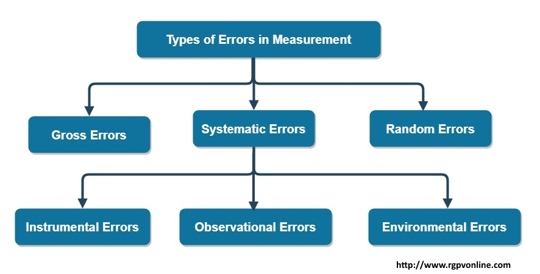

Q.6 Discuss errors in measurements?
मापन में त्रुटियों को समझाइये।
मापन में "ऐरर" को समझाइये.
Answer : ERROR
Error is defined as a difference between the desired and actual performance or behavior of a system or object. Thus the deviation of the true value from the desired value in instrumentation is called error.
ERROR IN MEASUREMENT
Measurement is the process of comparing an unknown quantity with an accepted standard quantity. It involves connecting a measurement instrument into the system under consideration and observing the resulting response on the instrument. The measurement thus obtained is a quantitative measure of the so- called “true value” (since it is very difficult to define the true value, the term “expected value” is used). Any measurement is affected by many variables, therefore the results rarely reflect the expected value. For example, connecting a measuring instrument into the circuit under consideration always disturbs value.
Some factors that affect the measurements are related to the measuring instruments themselves. Other factors that are related to the person using the instrument .The degree to which a measurement nears the expected value is expressed in terms of the error of measurement.
Error may be defined as the absolute or as percentage of error.
TYPES OF ERROR
There are generally two types of error in measurement as static error and dynamic error. Static error of a measuring instrument is the numerical difference between the true value of a quality and its value of quantity and by measurement, i.e. repeated measurement of the same quantity gives different indication. Dynamic error is the difference between the true value of a quantity changing with time and the value indicated by the instrument.
Static errors are categorized as gross errors or human error, systematic error and random errors.

1.GROSS ERROR
These errors are mainly due to human mistakes in reading or in using instruments or error in recording observations. Error may also occur due to incorrect adjustment of instruments and computational mistakes. These errors cannot be treated mathematically. The complete elimination of gross error is not possible, but one can minimize them. Some errors are easily detected while others may be elusive.
One of the basic gross errors that occur frequently is the improper use of an instrument. The error can be minimized by taking proper care in reading and recording the measurement parameter.
In general, indicating instruments change ambient conditions to some extent when connected into a complete circuit. Due to minimizing this error one should be taken at least three separate reading instead of being depended on one reading only.
2.SYSTEMATIC ERROR
Systematic errors are biases in measurement which lead to the situation where the mean of many separate measurements differs significantly from the actual value of the measured attribute. These errors occur due to shortcomings of the instrument, such as defective or worn parts, or ageing or effects of the environment on the instrument. Therefore A constant uniform deviation of the operation of an instrument is known as systematic error.
Some sources of systematic error are:
• Errors in the calibration of the measuring instruments.
• Incorrect measuring technique: For example, one might make an incorrect scale Reading because of parallax error.
• Bias of the experimenter. The experimenter might consistently read an instrument incorrectly, or might let knowledge of the expected value of a result influence the measurements.
There are basically three types of systematic errors:-
a. Instrumental errors.
b. Environmental errors.
c. Observational errors.
a. INSTRUMENTAL ERRORS
Instrumental error refers to the combined accuracy and precision of a measuring instrument, or the difference between the actual value and the value indicated by the instrument.
These errors are inherent in measuring instruments, because of their mechanical structure. For example, in the D’Arsonval movement, friction in the bearings of various moving components, irregular spring tensions, stretching of the spring or reduction in tension due to improper handling or over loading of the instrument.
Instrumental errors can be avoided by:-
i. Selecting a suitable instrument for the particular measurement applications.
ii. Appling correction factors after determining the amount of instrumental error.
iii. Calibrating the instrument against a standard.
b. ENVIRONMENTAL ERRORS
An environmental error is an error in calculations that are being a part of observations due to environment. Any experiment performing anywhere in the universe has its surroundings, from which we cannot eliminate our system. The study of environmental effects has primary advantage of being able us to justify the fact that environment has impact on experiments and feasible environment will not only rectify our result but also amplify it.
The environmental errors have different causes, which are widening with the passage of time, as the research works telling us, including; temperature, humidity, magnetic field, constantly vibrating earth surface, wind and improper lightening.
In high precision laboratories, where a slightest bug can destroy the whole system, removal or at least minimizing the environmental errors proved to be very fruitful.
c. OBSERVATIONAL ERRORS
Observational errors are error introduced by the observer. The most common error is the parallax error introduced in reading a meter scale, and the error of estimation when obtaining a reading from a meter scale.
These errors are caused by the habit of individual observers. For example, an observer may always introduce and error by consistently holding his head too far to the left while reading a needle and scale reading.
In general, systematic errors can also be subdivided into static and dynamic errors. Static errors are caused by limitations of the measuring device or the physical laws governing its behavior. Dynamic errors are caused by the instrument not responding fast enough to follow the changes in a measured variable.
3. RANDOM ERROR
Random errors are errors that remain after gross and systematic errors have been substantially reduced or at least accounted for. Random errors are generally an accumulation of a large number of small effects and may be of real concern only in measurements requiring a high degree of accuracy. Such errors can be analyzed statically.
These errors are due to unknown causes, not determinable in the ordinary processor making measurements. Such errors are normally small and follow the laws of probability. Random errors can thus be treated mathematically.
For example, suppose a voltage is being monitored by a voltmeter which is read at 15 minutes intervals. Although the instrument operates under ideal environmental conditions and accurately calibrated before measurements, it still gives that vary slightly over the period of observation. This variation cannot be corrected by any method of calibration or any other known method of control.
SOURCES OF RANDOM ERROR:
The sources of error, other than the inability of a piece of hardware to provide true measurements, are as follows:
1. Insufficient knowledge of process parameters and design conditions
2. Poor design.
3. Change in process parameters, irregularities, upsets, etc.
4. Poor maintenance.
5. Errors caused by person operating the instrument or equipment.
6. Certain design limitations.
There are also other types of error:-
• limiting error
• Parallax error.
• Quantization error.
LIMITING ERRORS
Most manufacturers of measuring instruments specify accuracy within a certain % of a full scale reading. For example, the manufacturer of a certain voltmeter may specify the instrument to be accurate within with full scale deflection .This specification is called the limiting error. This means that a full scale deflection reading is guaranteed to be within the limit of 2% of a perfectly accurate reading; however, with a reading less full scale, the limiting error increases.
PARALLAX ERROR
Parallax is an apparent displacement or difference in the apparent position of an object viewed along two different lines of sight, and is measured by the angle or semi-angle of inclination between those two lines.
Therefore A change in apparent position of an object, with respect to the reference marks(s) on an instrument, caused by imperfect adjustment of the instrument or by a change in the position of the observer or both called parallax error. It is also called instrumental parallax or error of parallax.
To avoid this error separated everywhere by the same distance. The term is used, in particular, in respect of lines and surfaces.
QUANTIZATION ERROR
In analog to digital conversion, the difference between the actual analog value and quantized digital value is called quantization error or quantization distortion. This error is either due to rounding or truncation. The error signal is sometimes considered as an additional random signal called quantization noise because of its stochastic behavior.